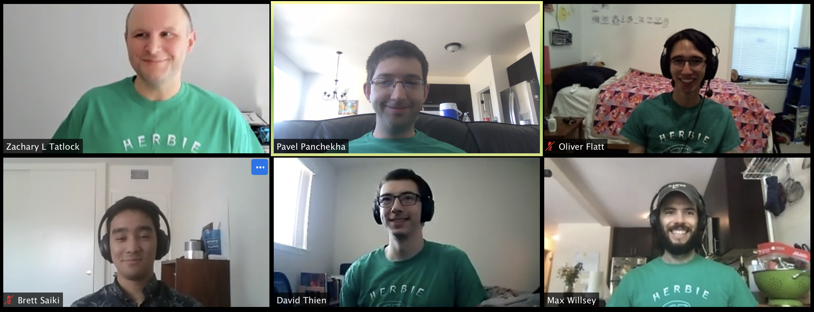
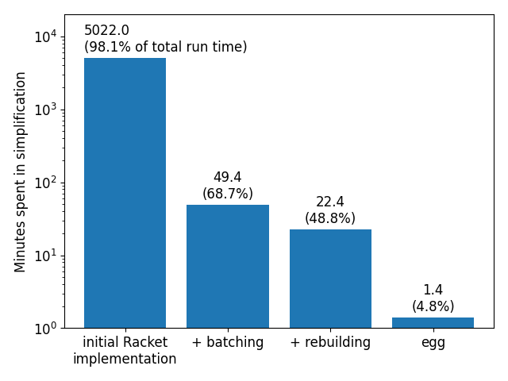

The Herbie developers are excited to announce
Herbie 1.4! This release continues a focus on speed and predictability.
Herbie automatically improves the accuracy of floating point
expressions. This avoids the bugs, errors, and surprises that so
often occur when working with floating point. Since
our PLDI'15 paper, we've been hard
at work making Herbie more versatile and easier to use.

Major features of this release
Faster simplification: Herbie now uses
the Egg library to
simplify expressions. Egg is roughly a hundred times faster than
Herbie's existing simplifier; Herbie with Egg is roughly twice as
fast overall. Egg is packaged for Windows, macOS, and Linux, so it
should be transparently usable on all platforms.
Input search: Herbie now uses interval arithmetic to
more efficiently sample valid inputs.
The "Cannot sample enough
valid points" error message should now be rarer,
because Herbie should be much better at finding valid inputs,
whereever they are.

Herbie 1.4 is substantially faster at simplifying
expressions than Herbie 1.3 and 1.2. With timeouts off, these two
releases have made simplification almost 4000× faster. Figure
from our arXiv
submission.
Improvement to core algorithm
Simplification now uses
the Egg library;
Herbie's existing e-graph library has been spun out as
regraph,
which can be used by other Racket projects.
Herbie's input search pass now analyzes the input program and
its precondition and avoids sampling invalid inputs as much as
possible.
The interval arithmetic library has gained support
for movability flags, which allow Herbie to detect and skip
unsamplable input points.
The core program evaluator now operates in batch mode,
speeding Herbie when it generates thousands of program
candidates.
The interval arithmetic library has been spun out as
rival,
which other Racket projects can now use. Minor bugs in the
interval library have been fixed, and support has been extended to
more functions.
One form of exponential growth in the rewrite algorithm is
fixed by a cache, eliminating a common cause of timeouts.
Herbie's "final simplify" step no longer does constant
folding, eliminating a rare source of accuracy regression.
Usability improvements
Safari has been tested, and major bugs have been fixed.
The documentation is now a bit clearer and more
approachable.
Herbie now blames the correct variable when a precondition is
unsatisfiable.
The :spec property and let*
construct are now supported.
Herbie now tries a little hard to produce simpler expressions.
This change won't totally fix Herbie's weird output, but should
help a bit.
Herbie now aggregates profile information across a whole
report and presents it in an interactive, JavaScript-enabled form
on the "Metrics" page. This should help us keep speeding up
Herbie.
Some "internal" measures on the details page now show correct
data.
Code Cleanup
Several herbie dependencies have been spun out as libraries,
including the C and TeX translators
(fpbench),
the e-graph implementation
(regraph),
and the interval library
(rival).
Other projects can now use these components.
Herbie's support for complex number arithmetic has been
extracted to a beta-quality
external
library. In the future we hope to provide a standard plugin
API not only for complex numbers but also vectors, matrices, and
other mathematical objects.
Herbie's support for multi- and mixed-precision operations
continues to improve, though there is more to do. We are targeting
Herbie 1.5 for this to be "done".
Many obsolete functions and data structures have been removed.
A new random-number algorithm means pre-1.4 seeds will produce
different results on Herbie 1.4.
The code base was reorganized to split the web code across
multiple files, with cleaner separation between
responsibilities.
Herbie now uses Github Actions, not Travis, as its continuous
integration service. This already means that single-precision and
posit support is better tested, and we hope to leverage Github
Actions more in the future.
Try it out!
We're want Herbie to be more useful to scientists, engineers, and
programmers around the world. We've got a lot of features we're
excited to work on in the coming months. Please
report bugs,
join
the
mailing list,
or contribute.